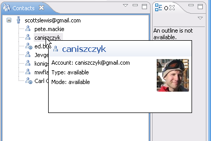
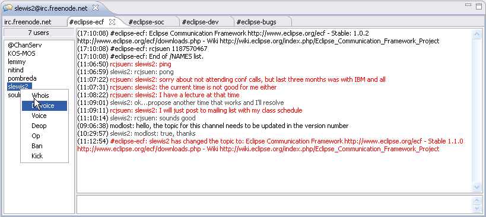
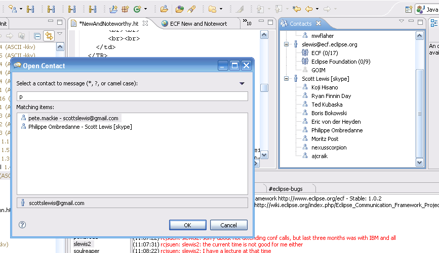

an eclipse technology project
New and Noteworthy
1.2.0

|
eclipse communication framework
an eclipse technology project New and Noteworthy 1.2.0 |
|
|
Presence and Chat UI Improvements |
A number of UI changes/additions were contributed:
Buddy list pictures now show when hovering over a buddy for supporting providers (XMPP/Google Talk):

Several improvements to chat UI (IRC/XMPP), including operations on members (e.g. WHOIS for IRC), user count, better handling of
text scrolling, etc.

|
|
BugDay Fixes/Enhancements |
ECF had an excellent number of bugs fixed via
Bug Day participation. Thanks to all contributors in the community for the excellent work!
|
|
Jingle-Based VOIP |
See terrific work for the Google SOC by Moritz Post here.
|
|
ECF Server Applications |
See ECF Servers wiki page. Also servers associated with each of the
new providers described below (Websphere CE, Weblogic, JGroups).
|
|
Browse Contacts |
Added the ability to open a browse contacts dialog and interactively search through contacts.

See also bug #195770 and bug #196772.
|
| |
|
ECF API Changes |
|
|
Discovery API |
Significant additions to the discovery API. See bug #200791 and bug #199259.
|
|
Presence API |
Added support for sending/receiving subject/topic updates for a chat room (IChatRoomAdminListener/IChatRoomAdminSender).
|
|
New Providers: IBM Websphere CE, BEA Weblogic, JGroups Multicast |
See the ECF @ OSUOSL website.
|
|
Changed EE for org.eclipse.ecf.provider |
Refactored classes out of bundle and changed execution environment for org.eclipse.ecf.provider bundle to CDC 1.1/Foundation 1.1. Allows this bundle to be used in other runtime environments. See bug #202100. |
|
FileTransfer API |
Added support file transfer pause and resume. See bug #204386. Also
added new API for partial file transfers. See bug #205011.
Added support for pause/resume for both the org.eclipse.ecf.provider.filetransfer and the org.eclipse.ecf.provider.filetransfer.httpclient implementations. |
|
ECF Remote Services Improvments |
ECF has a little-known API for accessing remote OSGi services called the Remote Services API.
This API allows the registration, discovery, and remote access to arbitrary services. Services can be accessed via the
usual OSGi services registry API (i.e. BundleContext.getServiceReference), or via a more explicit remote service API. See
blog posting about addressing issues of network transparency here.
The remote services API can be used by clients in either a network transparent manner or not...to be decided at registration and lookup time by the service publisher and the service client, respectively. See example/test code here. |
|
Automated Build |
ECF now has an automated build and server setup to run automated daily builds.
|